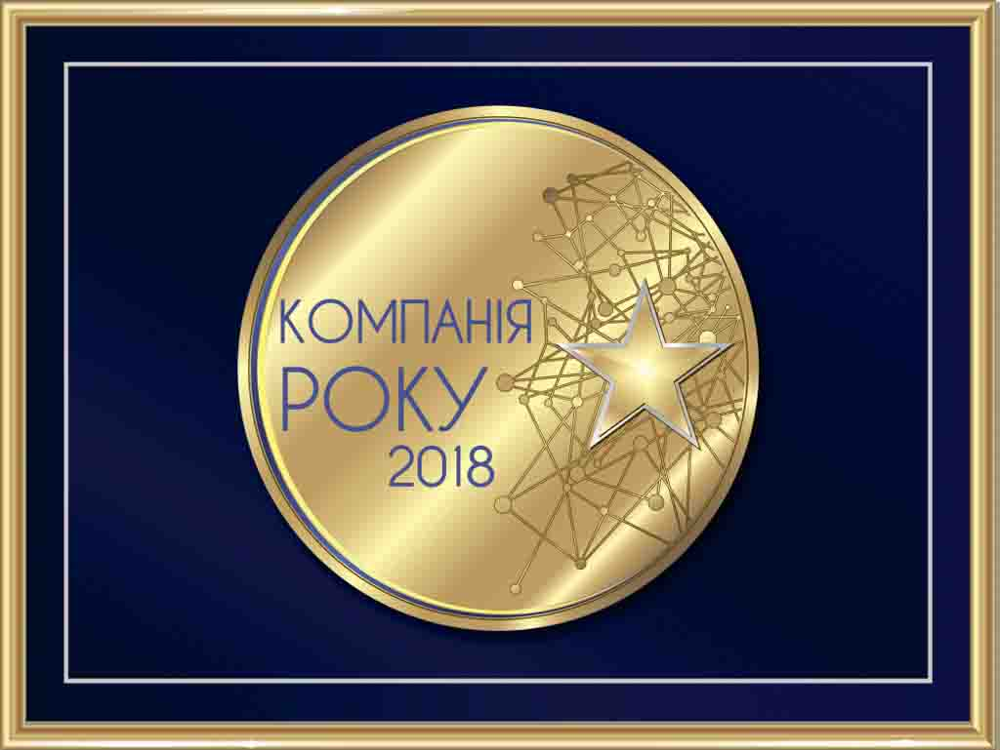
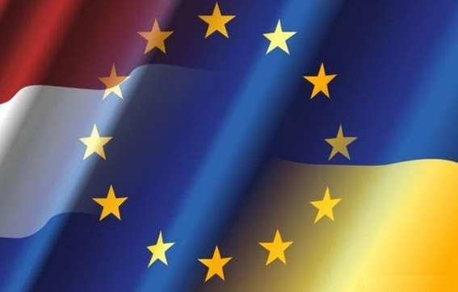
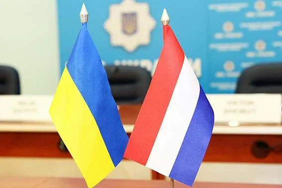

Україна, м. Київ, Голосіївський проспект, 89


НОВИНИ
АККРЕДИТАЦІЯ ALEX STEWART INTERNATIONAL CORPORATION ЗГІДНО ДО ВИМОГ ISO/IEC 17065:2012 "Оцінка відповідності. Вимоги до роботи різних типів органів з інспектування“
Опубліковано: 20.12.2022

В грудні 2022 року компанія Alex Stewart International Corporation успішно пройшла аккредитацію згідно до вимог ISO/IEC 17065:2012 "Оцінка відповідності. Вимоги до роботи різних типів органів з інспектування“.
На протязі багатьох років компанія Alex Stewart International Corporation успішно займає один з передових сегментів в Україні в сфері незалежної експертизи. Керівництво і персонал компанії постійно підвищують свій професійний рівень, набуваючи нові знання в сфері надання інспекційних, арбітражних та консалтингових послуг.
Новим видом діяльності компанії є сертифікація продукції з метою підтвердження відповідності та якості продукції чинним нормам, стандартам або вимогам технічних регламентів на підставі випробувань та аналітичних досліджень. За результатами отриманих даних видається сертифікат відповідності.
АККРЕДИТАЦІЯ ALEX STEWART INTERNATIONAL CORPORATION ЗГІДНО ДО ВИМОГ ISO 17020
Опубліковано: 16.02.2021
В лютому 2021 року компанія Alex Stewart International Corporation успішно пройшла аккредитацію згідно до вимог ISO 17020.

Компанія Alex Stewart International Corporation проводить оцінки від імені приватних клієнтів, державних служб і організацій або офіційної влади з метою надання їм інформації про відповідність перевіряємих об`єктів регламентам, стандартам, технічним вимогам, схемам інспекції або умовам контрактів. Параметри інспекції можуть включати кількість, якість, безпечність, відповідність призначенню, безперервне виконання вимог до безпечності установок або систем в процесі експлуатації.
Міжнародний стандарт ISO 17020 охоплює діяльність компанії Alex Stewart International Corporation в розрізі експертизи матеріалів, продукції, установок, підприємств, процессів, робочих методик або послуг, визначення їх відповідності вимогам та надання звіту за результами експертизи замовникам.
Головна вимога, якому відповідає процес інспектування, є забезпечення неупередженості і незалежності. Процедури забезпечення цього принципу розробляються та використовуються в структурі компанії Alex Stewart International Corporation, а підставою для розробки є результати попередньої оцінки ризиків факторів, що можуть спричинити необ`єктивність результатів інспектування.
2019-й РІК "АЛЕКС СТЮАРТ ІНТЕРНЕШНЛ КОРПОРЕЙШН ЛТД"
Опубліковано: 01.02.2020
Компанія "АЛЕКС СТЮАРТ ІНТЕРНЕШНЛ КОРПОРЕЙШН ЛТД" за 2019-й рік проінспектувала більше ніж 2100 контейнерів, що були відправлені в більш ніж 20 країн світу. Серед проінсректованих вантажів були наступні експортні позиції України - кукурудза, пшениця, шрот соняшниковий, горох жовтий, соєва шелуха, жом цукрового буряку, просо червоне і жовте, кориандр, нут, соєві боби. По даним продуктам проводились інспекції цілістності контейнерів, якості та кількості вантажу, наявність радиації та вміст ГМО і токсинів.
КОМПАНІЯ РОКУ 2018
Опубліковано: 17.04.2019
Компанія "АЛЕКС СТЮАРТ ІНТЕРНЕШНЛ КОРПОРЕЙШН ЛТД" на підставі експертного висновку ввійшла в число кращих підприємств отраслі в м.Київ і внесена в реєстр "Надійних та інвестиційно сприятливих підприжмств в Україні". Ассоціацією єкономічного співробітництва і розвитку підприємство надано статус "Компанія року 2018".
БІЗНЕС-ФОРУМ ГОЛЛАНДІЯ-УКРАЇНА
Опубліковано: 02.05.2016
Майданчиком для обговорення проблем і перспектив співробітництва українських і західних бізнесменів став Бізнес-Форум Голландія-Україна, який відбувся в місті Нутдорп. Захід пройшов за участю Міністра фінансів України Наталії Яресько та Міністра по зовнішній торгівлі, розвитку і співробітництва Нідерландів Ліліан Плумен.
На форумі більше ніж 300 представників бізнесу і уряду обох країн обговорювали питання співробітництва в сферах енергоефективності, транспорту, інфраструктури, ІТ та інжинірингу
Особливу увагу було приділено питанням роботи а агропромисловому секторі - і це не випадковість. В структурі українського експорту в Нідерланди сільськогосподарська продукція займає перше місце.
"Перспективи українського бізнесу в Європі та в Нідерландах поступово ростуть. З голландськими технологіями наш аграрний сектор подвоїть свою продуктивність, - впевнений член української делегації, начальник відділу сприяння експорту Андрій Голято, - але перепон для експорту української продукції в ЄС досить багато. Серед них низькі квоти, складності з сертифікацією продукції та мала кількість прямих зв`язків між представниками бізнесу. Рішення останньої проблеми є однією з головних задач в сфері підтримки українського бізнесу за кордоном.
За матеріалами пресс-служби ДП "Держзовнішінформ".
11 Квітня 2016 року
ПІДГОТОВКА ДО БІЗНЕС-ФОРУМУ ГОЛАНДІЯ-УКРАЇНА
Опубліковано: 16.04.2016
23 березня 2016р. в рамках підготовки до бізнес-форуму Голландія-Україна відбулась зустріч керівників компанії Alex Stewart International Corporation з Міністром фінансів України Наталієй Яресько. Обговорювались проблеми, з якими зіштовхуються закордонні компанії, які зараз працюють в Ураїні.
Міністр фінансів України Наталія Яресько безпосередньо вивчила головні перепони з якими зіштовхуються голландські компанії, які працюють в Україні, для того, щоб прийняти максимально ефективні міри при обговоренні реформ та рішень в Міністерстві або з іншими партнерами.
Діалог між компаніями та урядом цих двох країн посилить економічну діяльність і торгівлю.